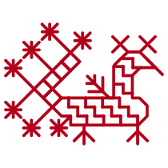
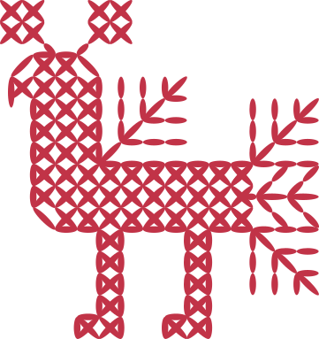

Открытые калитки, деревянные храмы, гранитные носы и разноцветные варежки. Отправляемся в страну озёр ловить рыбу, слушать воду, ветер, древние песни и, может быть, самого себя.
Gimas / Shutterstock.com
о карелах
Карелы — народ большой финно-угорской семьи, которая тысячи лет населяет северные леса от Балтийского моря до Волги. Среди «родственников» карелов в России — мордва, удмурты и коми, а в Европе — финны, эстонцы и венгры.
Tatyana Elesina / Shutterstock.com
Сегодня же народ не слишком многочислен: в России, по данным 2010 года, всего около 60 тысяч карелов, и почти все они живут в Карелии. В основном — в Олонецком и Пудожском районах к северо-востоку от Ладожского озера, а также на севере республики: именно там двести лет назад финский исследователь Элиас Лённрот собрал и записал песни «Калевалы» — карело-финского эпоса.
Когда-то карельские поселения можно было встретить всюду на северо-западе нынешней России и в некоторых соседних землях. Имя северного народа сохранилось в названиях древней крепости Корела в Приозерске, Карельского перешейка в Ленинградской области и даже белорусского посёлка Кореличи (вероятно, он был основан выходцами из карельских земель).
Традиции и кухня
Жизнь карелов исторически связана с лесом и водой. Лес — защита от врагов и кормилец. Здесь охотились, собирали ягоды и травы, расчищали участки под пашню, из болотных руд добывали железо для рабочих инструментов, домашней утвари и украшений. Озёра и реки — дороги, по берегам которых стоят посёлки, и источник рыбы, главного богатства Карелии.
Карельская рыбалка — не просто промысел, а настоящая традиция. Чаще всего на неё уезжают с ночёвкой, а то и на целую неделю в специальный домик на берегу озера. Рыбак словно переходит в другой мир, где остаётся с рыбой один на один.
Снасти, разумеется, готовят заранее. Сегодня экипировка простая и современная, а когда-то в каждом доме была плетённая из конопляных нитей сеть, берестяной невод, удилища из правильных пород дерева: не вздумайте ловить на ольху или можжевельник
Снасти, разумеется, готовят заранее. Сегодня экипировка простая и современная, а когда-то в каждом доме была плетённая из конопляных нитей сеть, берестяной невод, удилища из правильных пород дерева: не вздумайте ловить на ольху или можжевельник
У каждого озера, речки, порога и плёса есть хозяин — водяной, которого полагается задобрить: бросить в воду щепоть табака или ещё что-нибудь ценное и приятное. А ещё водяной любит тишину и покой, поэтому полагается рыбачить в полной тишине и не оставлять на берегу ничего лишнего, иначе водяной обидится и уйдёт в другое место, а с ним и вся рыба. Ну а если с водяным удалось договориться, то всё решают терпение, спокойствие и изобретательность рыбака.
Пойманная рыба для карелов не просто еда, её ценят и почитают. Особым уважением пользуется щука: оберег из щучьей челюсти, зубы которой отпугивают злых духов, до сих пор можно встретить в сельских домах. А калевальский герой Вяйнямёйнен сделал из челюсти гигантской щуки волшебные гусли кантеле.
В наши дни у причалов рядом с вёсельными лодками появились моторки, лес уже не сплавляют по рекам, к посёлкам протянулись дороги (хотя в межсезонье проехать по ним иногда непросто). Но в главном жизнь в Карелии не так уж и изменилась, а вместе с жизнью не слишком меняется и традиционная кухня.
Здесь всё так же ловят рыбу и охотятся, собирают грибы и ягоды, заготавливают на зиму всё, что может храниться в холодном погребе, и обязательно пекут пироги со всем вышеперечисленным.
Калитки — визитная карточка карельской кухни. Это открытые, прищипанные сверху пирожки из пресного теста, чаще всего ржаного

Другой миф о калитках — что они непременно должны быть продолговатой формы. Именно такие обычно подают в Петрозаводске или в Кеми. Но вас вполне могут угостить и круглой калиткой: каждая хозяйка печёт их по-своему. То же касается и начинок — они могут быть любыми, хотя традиционно калитки делают с картошкой, перловой или ячневой крупой, иногда — с рисом или толокном. Во многих домах круглые открытые пирожки готовят на пышном дрожжевом тесте — и тогда это уже не калитки, а шаньги.
Интересно, что само слово «калитка» не карельское. Считается, что оно происходит от русского «калита» — кошель: ведь начинка хранится внутри, как деньги в кошельке. Существует даже народная этимология, связывающая карельские пирожки с князем Иваном Калитой: тот будто бы так любил калитки, что велел постоянно носить их за собой на блюде.

Народное творчество
Карельские женщины занимались шитьём и украшали одежду, полотенца, скатерти и простыни орнаментальной вышивкой. Обязательные мотивы этой «домашней живописи» — образы леса: деревья, травы, цветы.
Косменко А. П. Северные узоры. Народная вышивка Карелии. Петрозаводск, 1989
Конец полотенца. Начало ХХ века. Двусторонний шов. Посёлок Пряжа, Карелия, Пряжинский район. Автор А. И. Антонова
Где-то они лишь угадываются в узоре, а где-то явно заметны. При этом они могут быть никак не связаны с реальным миром: вы вряд ли найдёте в карельской чаще звездообразные цветы с полотенца из пряжи или с орнамента на подзоре — так называли украшенный край простыни.
goskatalog.ru
Зарисовка фрагмента орнамента подзора. 1963 год. Из альбома «Экспедиция в Карельскую АССР. Альбом зарисовок. Часть 1. Вышивка», автор Т. А. Исаева. Из коллекции Всероссийского музея декоративно-прикладного и народного искусства
Косменко А. П. Северные узоры. Народная вышивка Карелии. Петрозаводск, 1989
А где-то, как на фрагменте рубахи из Мандеры, деревья словно превращаются в женские фигуры с воздетыми руками.
Фрагмент станушки (элемента женской рубахи). Начало XIX века. Деревня Мандера Пряжинского района
Фрагмент станушки (элемента женской рубахи). Начало XIX века. Деревня Мандера Пряжинского района
Колыбельная
В 1835 году Элиас Лённрот — финский сельский врач, волей судьбы (и скандинавских богов) ставший фольклористом, открыл миру, наверное, главную достопримечательность Карелии — «Калевалу».
Карельские руны написаны так называемым калевальским стихом — нерифмованным четырёхстопным хореем, где каждая следующая строка по смыслу или строю часто повторяет предыдущую — словно бы рассказывает то же самое на новый лад. Эти песни плавные, протяжные, текучие — словно вода. Переводчик «Калевалы» Леонид Бельский даже в шутку жаловался, что русские слова для них слишком коротки.
Эта эпическая поэма состоит из 50 рун — народных песен, которые Лённрот собирал, путешествуя по Северной Карелии. Рунопевцы исполняли их поодиночке или двумя голосами, часто аккомпанируя себе на кантеле — традиционном инструменте, похожем на гусли.
А ещё у карельского фольклора есть уникальная черта. Наряду с эпическими рунами — про сотворение мира, героев Вяйнямёйнена и Лемминкяйнена, чудо-мельницу Сампо — тем же самым калевальским размером в Карелии пели и совсем другие песни. Свадебные, заговорные и, конечно же, колыбельные. Одну из таких колыбельных мы и предлагаем вам послушать.
карельская колыбельная

Она была записана в 1983 году в деревне Зашеек Лоухского района Карелии со слов Федоры Тихоновны Кундозеровой.
Записала и перевела колыбельную фольклорист Нина Лавонен.

Алиса, включи карельскую колыбельную*
Солистка ILMU Татьяна Ткаченко: «Вообще, для меня главной фразой стал вопрос из колыбельной „mistä tiesit tänne tulla?“. В дословном переводе: „откуда ты знал сюда прийти?“. Для меня это описание самой жизни: наше чудесное появление в этом мире, познание его, насколько возможно, и путешествие длиною в жизнь. У каждого этот путь свой».
Познакомьтесь поближе
Aleksandr Medvedkov / Shutterstock.com
петрозаводск
Главный город Карелии стоит на западном берегу Онежского озера. Возник Петрозаводск в 1703 году — всего на три месяца позднее Санкт-Петербурга, по воле Петра I. Неугомонный царь добрался до карельских лесов и распорядился построить казённый оружейный завод, который в советское время стал Онежским тракторным
Сейчас в столице Карелии чуть меньше 300 тысяч жителей. Карелов среди них не слишком много: язык, культура и традиции лучше сохраняются в деревнях.
Местные жители ведут размеренную спокойную жизнь, а большинство туристов надолго не задерживается. И напрасно: Петрозаводск — компактный, тихий, светлый город.
Сейчас в столице Карелии чуть меньше 300 тысяч жителей. Карелов среди них не слишком много: язык, культура и традиции лучше сохраняются в деревнях.
Местные жители ведут размеренную спокойную жизнь, а большинство туристов надолго не задерживается. И напрасно: Петрозаводск — компактный, тихий, светлый город.
Обычно в столицу Карелии заезжают на пару часов, пополнить запасы антимоскитных средств, прежде чем отплыть в Кижи или разъехаться по турбазам и домам отдыха, отправиться на многодневную рыбалку, а то и в сплав по рекам и озёрам. Особенно хорошо в Петрозаводске белыми ночами, когда нескончаемые сумерки превращают прогулку по набережной и центральным проспектам в своего рода медитацию.
Отели в Петрозаводске
Национальный музей Республики Карелия — самое подходящее место, чтобы серьёзно окунуться в карельскую культуру.
Археология и политика, биоразнообразие и фольклор, материальное и духовное — здесь есть многое, о чём вы до сих пор даже не помышляли (например, о том, как повлияли друг на друга местная и славянская культуры) или о чём у учёных по-прежнему нет единого мнения (как и отчего возникла идея сетчатой керамики).
Обстоятельный осмотр займёт несколько часов. Но если вдруг нет настроения вникать, идите сразу к экспонатам с заонежскими петроглифами. Рисунки оказались в музее по счастливой случайности: один из камней, тысячелетиями лежавших на берегу Онеги, раскололся, и его удалось перевезти в Петрозаводск.
Яндекс Карты
Как после осмотра древних рисунков на осколках громадного валуна удержаться от поездки на восточный берег Онежского озера и не посмотреть на петроглифы в живой природе?

пл. Ленина, д.1
Набережная Онежского озера. Главный петрозаводский променад хорош всегда, но самое правильное время для прогулок — ясным утром, когда ещё не людно, а с озера дует лёгкий бриз.
Тут, как в стихотворном перечне исключений из правил спряжения глаголов, можно заниматься решительно всем: и гнать (прочь тоску-печаль), и держать (кого-то родного за руку),
и дышать замечательно чистым смолистым воздухом, и смотреть сколько хватает глаз, и видеть многочисленные скульптуры, подаренные Петрозаводску городами-побратимами.
Mikhail Markovskiy / Shutturstock.com
Воздушные «Рыбаки» Рафаэля Консуэгры забрасывают в озеро металлические сети, массивная «Спящая красавица» из Ла-Рошели прилегла отдохнуть на берегу, а сквозь стальной лист из немецкого Нойбранденбурга, кажется, в любое время суток можно увидеть звёзды
Онежская набережная
Остров Кижи. Строго говоря, Кижи (ударение на первый слог) — это совсем не Петрозаводск.
Остров находится в северной части Онежского озера, однако самый прямой и удобный путь к сокровищнице деревянного зодчества лежит через столицу Карелии: суда на подводных крыльях отходят от причалов Онежской набережной. Дорога в один конец займёт примерно час с четвертью.
Кижи — остров-музей, где собраны десятки подлинных деревянных построек со всего Русского Севера: карельские дома, мельницы и потрясающие храмы Заонежья.
Кижи — остров-музей, где собраны десятки подлинных деревянных построек со всего Русского Севера: карельские дома, мельницы и потрясающие храмы Заонежья.
Жемчужина собрания — построенная именно здесь в 1714 году деревянная 22-главая церковь Преображения Господня, сработанная, по легенде, без единого гвоздя. Луковицы куполов, ярусами поднимающихся к небу, покрыты осиновой черепицей, отливающей серебром на солнце и словно бы наводящей на зрение резкость, когда небо затянуто тучами.
Отели в Карелии
Приезжать сюда лучше пораньше — чтобы ничего не пропустить, понадобится несколько часов. А пропускать не стоит: можно зайти в большинство построек, отворить дверцу печи, присесть на лавку или покачать люльку — ровно так же это делали в карельских семьях сотню-другую лет назад
Остров Кижи
На карте
А где поесть
Стоящих внимания ресторанов карельской кухни в Петрозаводске пока меньше, чем желающих её попробовать, поэтому благоразумно озаботиться заказом столика загодя.
Мы выбрали места, куда с удовольствием ходят любители местной кухни — всех этих калиток, ягодных морсов, медвежатины, оленины и лосятины.
Где-то готовят по старинке, а где-то отваживаются на современные интерпретации дедовских рецептов.
Яндекс Карты
«Карельская горница»
Здесь уже с порога ясно: вы попали в избу домовитой бабы-яги с печью, самоваром, плетёными туесами, поленницей и домоткаными ковриками. Кормят убийственно вкусно: ряпушкой, солёными груздями, супом «Хийси» с лосятиной, олениной в пиве и бездной калиток с необычными начинками. Не пропустите домашние настойки из морошки, голубики, рябины и непременно попробуйте травяные чаи и морсы — их тоже готовят на месте и с любовью.
Здесь уже с порога ясно: вы попали в избу домовитой бабы-яги с печью, самоваром, плетёными туесами, поленницей и домоткаными ковриками. Кормят убийственно вкусно: ряпушкой, солёными груздями, супом «Хийси» с лосятиной, олениной в пиве и бездной калиток с необычными начинками. Не пропустите домашние настойки из морошки, голубики, рябины и непременно попробуйте травяные чаи и морсы — их тоже готовят на месте и с любовью.
улица Фридриха Энгельса, 13
Яндекс Карты
«Ягель»
Современная интерпретация карельской кухни: супы из оленины и лосятины здесь подают в каравае, в чёрные пельмени кладут горбушу, а в салат с сигом — печёные корнеплоды. В рецепт здешнего жаркого из медвежатины входит болгарский перец — пальчики оближешь! А полбу запекают «по-таёжному»: с помидорами, белыми грибами, говядиной, луком и сырной корочкой. За здоровье повара не грех поднять рюмку настойки на черноплодке.
Современная интерпретация карельской кухни: супы из оленины и лосятины здесь подают в каравае, в чёрные пельмени кладут горбушу, а в салат с сигом — печёные корнеплоды. В рецепт здешнего жаркого из медвежатины входит болгарский перец — пальчики оближешь! А полбу запекают «по-таёжному»: с помидорами, белыми грибами, говядиной, луком и сырной корочкой. За здоровье повара не грех поднять рюмку настойки на черноплодке.
улица Ленина, 28
Яндекс Карты
«В Карелии есть»
«Ресторан-музей» с мастер-классами, галереей и даже пещерой с петроглифами. Еда здесь не каноническая, а скорее по мотивам карельской кухни. Лучше не размениваться и целиться в гастрономический спектакль «Карелия»: на столе друг за другом, как артисты, появятся нарядные рубанина из оленины или жжёный лось, мороженое из форелевой икры и ряпушки, уха, вяленая утка, грибной рожок — да мало ли что повар ещё сочинит к вашему приходу.
«Ресторан-музей» с мастер-классами, галереей и даже пещерой с петроглифами. Еда здесь не каноническая, а скорее по мотивам карельской кухни. Лучше не размениваться и целиться в гастрономический спектакль «Карелия»: на столе друг за другом, как артисты, появятся нарядные рубанина из оленины или жжёный лось, мороженое из форелевой икры и ряпушки, уха, вяленая утка, грибной рожок — да мало ли что повар ещё сочинит к вашему приходу.
набережная Варкауса, 27, корпус 2
Яндекс Карты
«Фрегат»
Первый рыбный ресторан Карелии хорош и видами из окон от пола до потолка, и открытой верандой. Скользят по воде катера, вьются над озером стаи чаек — покой и красота пленяют даже без еды. В меню есть сырая рыба (карпаччо) из собственной коптильни, стейки, котлетки, уха — всё только карельского вылова. А ещё сложноскроенные соусы — из толчёной брусники, из чеснока, на сливках, масле, овощах и честном слове.
Первый рыбный ресторан Карелии хорош и видами из окон от пола до потолка, и открытой верандой. Скользят по воде катера, вьются над озером стаи чаек — покой и красота пленяют даже без еды. В меню есть сырая рыба (карпаччо) из собственной коптильни, стейки, котлетки, уха — всё только карельского вылова. А ещё сложноскроенные соусы — из толчёной брусники, из чеснока, на сливках, масле, овощах и честном слове.
проспект Карла Маркса, 1А
НЕ ТОЛЬКО СТОЛИЦА
Истинная Карелия всё же не в городах. За ней, а заодно за тишиной и покоем нужно отправляться в леса, в старые деревни по берегам озёр, к разрушенным мельницам и ряжевым стенкам на порожистых речках. Места, которые мы выбрали, не всегда прямо связаны с историей карелов.
Но они точно помогут лучше понять и почувствовать карельскую культуру, а заодно и просто хорошо отдохнуть. Главное — помнить, что путь нередко важнее цели. Особенно по карельским дорогам
Онежские петроглифы. В Заонежье сотни, а то и тысячи огромных загадочных наскальных рисунков, выбитых на «бараньих лбах» — гранитных валунах восточного побережья озера.
Самые известные петроглифы — на мысах Бесов Нос и Пери Нос, а также чуть севернее, на мысе Кочковнаволок. Во всех энциклопедиях первобытного сакрального искусства есть двухметровый онежский «бес» — вероятно, древнее божество, которое в XIX веке пытались «обезвредить», выбив поверх левой руки христианский крест. Здесь же изображения сома, налима, выдры, других животных и совсем уж таинственных существ.
Онежским петроглифам около шести тысяч лет — они чуть старше египетских пирамид. Похожие есть на побережье Белого моря и, например, в норвежской Альте. Для чего далёкие предки родственных карелам саамов выбивали изображения на гранитных скалах у кромки воды, доподлинно неизвестно. Но есть гипотеза, что древние люди верили, будто в таких местах открываются переходы между мирами: земным, подземным и небесным.
Добраться до петроглифов — отдельное приключение: автомобиль пройдёт лишь до посёлков Каршево или Шальского. А там — договаривайтесь с местными жителями о ночлеге, экскурсии или как минимум о поездке к носам на внедорожнике или на моторке («ежели Онега пустит», как говорят деревенские).

Turbochainik / Wikipedia.org
Увидеть старые дома в естественной среде (а не в музее под открытым небом, как в Кижах) и услышать живую карельскую речь можно на берегах огромного озера Куйто, в деревнях Калевала и Вокнаволок.
Большинство жителей этих деревень — карелы, а часть из них — ещё и представители древних рунопевческих родов.
Калевала, а в прошлом Ухта, получила почётное имя в честь карельского национального эпоса неспроста: в деревне чтут ствол сухой сосны, у которого Элиас Лённрот слушал карельские руны, и сохраняют амбар, где врач-фольклорист ночевал во время своих экспедиций. Как был устроен быт и на что походили дома и обычаи карелов в конце позапрошлого века, можно узнать в музее рунопевицы Марии Ремшу.
Калевала, а в прошлом Ухта, получила почётное имя в честь карельского национального эпоса неспроста: в деревне чтут ствол сухой сосны, у которого Элиас Лённрот слушал карельские руны, и сохраняют амбар, где врач-фольклорист ночевал во время своих экспедиций. Как был устроен быт и на что походили дома и обычаи карелов в конце позапрошлого века, можно узнать в музее рунопевицы Марии Ремшу.
Центр общественной жизни Вокнаволока — этнокультурный «Дом деревни». Причём работает он не столько для туристов, сколько для своих — в деревне искренне, без разнарядки, чтут старый уклад и традиции. Если повезёт, можно попасть на репетицию самодеятельного карельского театра или послушать карельские песни в исполнении тех, кто под них родился и живёт с ними изо дня в день.
Но главное, побольше гулять, дышать, глазеть и вслушиваться в певучую речь местных жителей — между собой они говорят на особом диалекте карельского, очень похожем на финский язык.
Отели в Карелии
Костомукшский городской округ, деревня Вокнаволок.
Этнокультурный центр «Дом деревни»
Этнокультурный центр «Дом деревни»
улица Перттунена, 14
Посёлок городского типа Калевала, Калевальский район.
Культурный центр
Культурный центр
улица Советская, 1

Карелия — территория дикой природы. Чтобы не отвлекаться на ухабы, поиски интернета и убежищ от комаров, стоит поехать в природный парк «Рускеала».
Сердце парка — глубокое прозрачное озеро на месте мраморного карьера. Здесь добывали мрамор для облицовки фасадов Исаакиевского собора и для украшения станций метро в Петербурге-Ленинграде. Сегодня бывшие каменоломни Рускеалы — своего рода витрина достижений карельской природы и разумного к ней отношения людей. В озере отражаются мраморные стены, облака и небо.
О том, какой вид лучше — со стен карьера или из лодки, можно спорить, но лучше проверить оба. Спускайтесь в подземную Рускеалу и пройдите по затопленным и чудно подсвеченным штольням: примерно так могла выглядеть карельская река мёртвых Туонела, из которой мать спасла неосторожного Лемминкяйнена
Отели в Рускеале
Дайвинг и верховая езда, прогулки по лесным тропам и совершенно оправданное благодатное ничегонеделание — карельская природа будто бы нарочно придумала это место для проветривания городских голов
Самый необычный способ добраться до парка — Рускеальский экспресс — ретропоезд от станции Сортавала. Поездка занимает чуть больше часа, а воспоминаний о ней хватит на годы.
Горный Парк Рускеала
Карелию стоит не только увидеть, но и услышать, а для этого нужно поехать на водопад Кивач.
Это, конечно, не Ниагара, но, чтобы сделать фотографию без людей в кадре, понадобится терпение истинного карельского рыбака.
Громче всего Кивач «говорит» по высокой воде — в мае или в начале июня.
Но, когда бы вы тут ни оказались, просто подойдите к самой воде, закройте глаза и слушайте реку: сначала она заглушит гомон голосов туристов, а потом понемногу и весь остальной мир и даже ваш внутренний голос. Йоги годами тренируются для такого живительного просветления!
Государственный природный заповедник Кивач

карельский сувенир
В Карелии без варежек не обойтись, а уж разновидностей их не меньше, чем пресловутых слов для описания видов снега. Плотные шитые и мягкие вязаные. Узорчатые праздничные и рабочие — белые или со скромным орнаментом.
rk.karelia.ru
Праздничные северокарельские варежки
Охотничьи и грубые рыбацкие с пенькой или конским волосом — мужчины вязали их сами, чтобы женская рука не касалась промыслового инструмента. Форма, расцветка и узор разнятся от деревни к деревне и у разных мастериц, а ближе к северу варежки приобретают саамские черты: яркие, с кисточками и острыми кончиками «хвост лосося».
Выбирайте, какие нравятся, — в любом случае будет тепло, чтобы никуда не спешить даже в сильный мороз.
Выбирайте, какие нравятся, — в любом случае будет тепло, чтобы никуда не спешить даже в сильный мороз.
rk.karelia.ru
Рабочие варежки из Южной Карелии
Забронировать отель с кешбэком до 30% и отправиться на поиски спокойствия в культуру карелов
можно на сервисе**
можно на сервисе**
*Доступно при наличии подписки Яндекс Плюс. Условия: https://clck.ru/S2yGv
**Акция с 25.06.2022 г. по 31.07.2022 г. Условия акции: https://clck.ru/rf2US. Только для пользователей с подпиской Яндекс Плюс.
**Акция с 25.06.2022 г. по 31.07.2022 г. Условия акции: https://clck.ru/rf2US. Только для пользователей с подпиской Яндекс Плюс.
0+